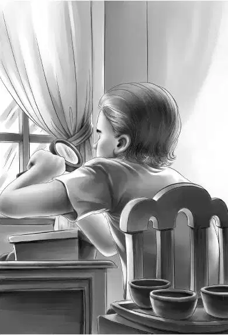

The picnic was over. The Aldens sat looking out over the blue water when the factory whistle blew.
“Oh， dear，” said Benny. “Now everyone will go to work and nobody will be at home when Freddy comes.”
“They don’t all go to work，” said Jessie. “By the way， I need some stuffing for the fish tonight. I’ll go to the store while you take the picnic things home.”
“I’ll go for you， Jessie，” said Benny. “I’d like to.”
“Good boy，” said Henry.
Benny walked up to the store， whistling. Mr. Fenton had the fish stuffing， and the two began to talk. The door opened， and who should come in but Freddy Willet！
“Hello， kid，” said Freddy. “I saw you come in. You one of the youngsters that teaches the funny school？”
“It isn’t a funny school，” said Benny with good nature. “And I do teach the smallest ones. They’re pretty keen kids， too.”
“Your name？” asked Mr. Willet.
“Benny.”
“Well， Benny， how would you like to learn something yourself？Come with me to the Easton family and watch me buy their old money. I bet you don’t know money when you see it. You’d never think a common penny was worth a dollar， would you？”
“No，” said Benny. He kept wondering why Freddy had invited him and Mr. Wilder-Smith to watch while he cheated the people. Benny took his box of stuffing and the two walked over to the house where the Eastons lived.
Mrs. Easton was waiting at the door with a smile. At that moment Mr. Wilder-Smith came along.
“Well， here we all are，” said Freddy. “Now you can watch me work. Mrs. Easton， we are all happy to be here. Let’s get started.”
Benny could hardly believe his eyes when Mrs. Easton put an old stocking on the table and poured out a pile of money. Some of the coins were very old， and a few had hardly been used at all.
Mrs. Easton said， “Some of that money was saved by my grandfather.”
They sat down at the table. Mr. Willet moved like lightning. He picked out one coin after another and dropped each in an empty box. He checked some coins by using a magnifying glass. Mr. Wilder-Smith just looked on. He did not seem to know a thing about coins.
“Is this an old penny？” asked Benny. It was almost as big as a half dollar， but it was made of copper.
“Yes， that’s an old penny. Let’s see. The date is 1864. I can pay Mrs. Easton ten dollars for it.” He put a ten-dollar bill on the table and the penny in the box.

Mrs. Easton smiled and said， “Mr. Willet works fast. He knows his business.”
“You can say that again！” said Freddy. He showed his teeth in a wide smile. He went on， “This is a nice job， Mr. Wilder-Smith. I have already bought five-hundred dollars worth of coins and things from these fishermen. They are very grateful to me.”
“No wonder， old boy，” said Mr. Wilder-Smith. “What in the world do you want them for？”
“Oh， I’m crazy about old things，” said Freddy. “I like ’em all. But I like coins best.”
Benny said， “I don’t see how you remember the prices without a book.”
“Easy！” said Freddy. “I’ve been at this business for many years. I know a coin the minute I see it.”
“I say，” said Mr. Wilder-Smith， “you might make a mistake.”
“Not me，” said Freddy. “I know these coins like old friends. I never make a mistake. There！This is the best one I’ve found.”
He pushed a dime over to the two visitors. “Here is a new coin in perfect condition. But look at the date. 1901S. I’ll pay Mrs. Easton plenty for that. She’ll never forget Freddy Willet， you bet.”
“I certainly won’t，” said Mrs. Easton.
“I’m sure of that，” said Mr. Wilder-Smith. “That dime looks as if it had never been used.”
“That’s right. It never has been used. That dime has sat here for more than sixty years.”
“By Jove， I thought a worn-out coin was worth more，” said the Englishman.
“No， not if it’s worn smooth. Then it’s worth nothing. See this big copper penny？Smooth as silk. I can’t read the date. That penny is old enough， but it’s not worth a cent！” He laughed loudly at his own joke.
“That’s all，” said Freddy. “The rest are no good. I’ll just settle up with Mrs. Easton.”
“Thanks very much，” said Mr. Wilder-Smith. “It was a jolly good show. I learned a lot from you.”
“I guess you learned something today， too， young man，” said Freddy.
“Yes， I did，” said Benny. He said goodbye to Mrs. Easton， and he and Mr. Wilder-Smith went out together.
Benny whispered quickly， “Hole in the log.” And Mr. Wilder-Smith whispered， “Look three times a day.”
Then Benny went one way and Mr. Wilder-Smith another. They did not seem to know each other， for the Englishman took off his hat to the boy.
Benny had a great deal to tell his family. He told it in a whisper.
Jessie said， “It’s funny how we all whisper. It seems as if somebody is listening all the time.”
“Maybe someone is，” said Violet.
They were noisy enough when Jessie put the baked stuffed fish on the table. They had baked potatoes， too， and onions， and apple pie and cheese.
“A big dinner at last，” said Benny. “I’m hungry.”
When it grew dark， the Aldens sat out in the yard in front of the hotel. Henry was on one end. He turned suddenly as he heard a noise coming from the bushes behind the house. It was a whisper.
“Benny！Come with me to the schoolhouse. Bring the back door key. Follow me through the bushes.” It was John Carter’s voice.
They all heard it. Henry gave the key to his brother. Benny went without a sound.
“Why did he want Benny？” Jessie wondered.
“Maybe his small size is better than my big size，” guessed Henry， speaking low. Then he began to talk about other things in his own tone of voice.
At ten o’clock Benny came back. He was very much excited.
“Whisper， Ben，” said Henry. “Who knows who is listening？”
So Benny said in a whisper， “We tried the room in the chimney. We could both get in， and we could see right through the coat button into the schoolroom. Mr. Carter thinks Freddy is hiding things in the schoolroom. But we couldn’t find them. He is going to hunt again. He thinks Freddy will stay a while longer because he has a lot of families left to visit.”
“Well， well，” said Mr. Alden. “You will have something to tell Max. It won’t be dull， either.”
“It’s funny，” said Benny. “We didn’t do anything to make this happen.”
“No， Benny，” said his grandfather. “But you all kept your eyes open. You cared enough about your new friends to worry about them. And you listened when they told you about the man who paid so much for a quarter. You guessed that he was cheating in every trade.”
“But we can’t prove a thing，” said Henry.
“No，” said Grandfather. “That’s why I am so glad to see John Carter.”